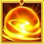
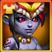

Guía de Aidan: Reliquias y habilidades para Hero Wars Alliance
- Por: Alexandre Domingos. .
Aidan puede transformar a un equipo al borde de la derrota en un equipo que se niega a caer. En esta guía de Hero Wars Alliance, explico su curación, sus escudos y su reliquia legendaria para que entiendas de dónde sale esa capacidad de supervivencia y qué mejoras merecen tus recursos primero.
Lo que me llama la atención es cómo sus habilidades conectan el sacrificio con la recuperación. El daño de habilidades aliadas crea más objetivos que curar, Kayla recibe otra oportunidad mediante la resurrección y la reliquia añade protección y crecimiento de Inteligencia. La verdadera decisión es si tu Aidan necesita una curación más potente o suficiente resistencia para seguir proporcionándola.


Índice de Aidan
- ¿Quién es Aidan?
- Función en combate y valoraciones
- Ventajas y desventajas
- Comparación de estadísticas máximas de los talismanes
- Guía de talismanes
- Habilidades de la reliquia legendaria y prioridad de mejora
- Habilidades del Reino
- Mejores skins y prioridad de mejora
- Prioridad de mejora de artefactos
- Prioridad de mejora de glifos
- Cómo contrarrestar a Aidan
- Sinergias de Aidan
- Mejores equipos y equipos antiguos populares
- Veredicto final de Alexandre
¿Quién es Aidan en Hero Wars Alliance?
Aidan es un Sanador de la retaguardia del Camino del Caos. Su función es mantener a los aliados luchando mediante curación, aumentos temporales de Salud y escudos de emergencia, con apoyo adicional de resurrección para Kayla.

- Clase principal: Sanador
- Posición: Retaguardia
- Estadística principal: Inteligencia
- Facción: Camino del Caos
- Sinergia principal: Kayla, aliados del Caos y equipos que reciben daño de habilidades aliadas.
Abrazo de fuego cura a los aliados que hayan recibido daño de habilidades aliadas desde su uso anterior. Eso convierte el sacrificio aliado en parte de su ciclo de recuperación. Los aliados del Caos reciben una curación más potente de Abrazo de fuego y de varios efectos de la reliquia, mientras que Kayla cuenta con mecánicas específicas de resurrección.
Mi primera prioridad es mantener vivo a Aidan. Las fórmulas de curación potentes solo ayudan mientras puede seguir usando sus habilidades, y su propia habilidad definitiva consume parte de su Salud máxima.
Ventajas y desventajas de Aidan - Hero Wars Alliance
✅ Ventajas
- Cura a varios aliados después del daño de habilidades aliadas.
- Curación más potente para los héroes del Caos.
- Los escudos de emergencia protegen a los aliados con poca Salud.
- Apoyo específico de resurrección para Kayla.
- Las mejoras de la reliquia añaden protección, curación e Inteligencia acumulable.
❌ Desventajas
- La habilidad definitiva consume 20% de su propia Salud máxima.
- Daño directo limitado y ningún control de masas indicado.
- La resurrección de Kayla requiere que Kayla esté en el equipo.
- La protección del escudo solo dura 4 segundos.
- El crecimiento de Inteligencia necesita daño de habilidades aliadas para alcanzar su umbral de activación.
Aidan - Comparación de estadísticas máximas de los talismanes
Estos valores de configuración máxima son el punto de partida de los cálculos siguientes. Se muestran antes de las ganancias temporales de Salud e Inteligencia durante el combate; las ganancias de estadísticas de la reliquia no se añaden otra vez.
| Estadística | Talismán 1: Talismán de las Cenizas | Talismán 2: Talismán de la Implacabilidad |
|---|---|---|
| 17,843 | 15,843 | |
| 3,679 | 3,679 | |
| 4,137 | 4,137 | |
| 1,129,442 | 1,315,480 | |
| 37,314 | 35,314 | |
Daño mágico | 230,375 | 203,585 |
Armadura | 39,840 | 39,840 |
| 43,200 | 41,200 | |
| 3,380 | 7,780 | |
| 278,122 | 279,449 |
Guía de talismanes de Aidan - Hero Wars Alliance
Eliges un talismán para el combate. Solo se aplican las bonificaciones del talismán equipado; tener ambos no combina sus estadísticas. A diferencia de las bonificaciones de las skins, esta elección cambia las ventajas que Aidan lleva a la batalla. Evalúa las tres ranuras de renovación por su total combinado.
1 - Talismán de las Cenizas

| Talismán | Bonificación de estadística principal |
|---|---|
| Inteligencia +2,000 |
| Ranura 1 | Ranura 2 | Ranura 3 | Bonificación total de renovación |
|---|---|---|---|
| Daño mágico +6,600 | Daño mágico +6,600 | Daño mágico +6,600 | Daño mágico +19,800 |
La bonificación de Inteligencia añade +6,000 de Daño mágico, +2,000 de Resistencia mágica y +2,000 de Daño físico. Junto con la bonificación combinada de renovación de +19,800 Daño mágico, el Talismán de las Cenizas refuerza Abrazo de fuego, la autocuración y los efectos de la reliquia que escalan con el Daño mágico.
2 - Talismán de la Implacabilidad

| Talismán | Bonificación de estadística principal |
|---|---|
| Dureza +4,000 |
| Ranura 1 | Ranura 2 | Ranura 3 | Bonificación total de renovación |
|---|---|---|---|
| Salud +60,500 | Salud +60,500 | Salud +60,500 | Salud +181,500 |
El Talismán de la Implacabilidad añade +4,000 Dureza y una bonificación combinada de renovación de +181,500 Salud. La configuración máxima proporcionada alcanza 1,315,480 de Salud y 7,780 de Dureza. Más Salud máxima aumenta los valores de Ritual del Fénix basados en Salud; la Dureza ayuda a resistir el daño enemigo por debajo del 50% de Salud, pero no reduce el daño que Aidan se inflige.
¿Qué talismán deberías usar para Aidan?
Mi elección habitual para una curación más potente es el Talismán de las Cenizas. Sus 230,375 de Daño mágico permiten a Abrazo de fuego proporcionar 73,912.5 de curación por objetivo normal, frente a 65,875.5 con el Talismán de la Implacabilidad. También mejora la reducción de daño del nivel 10 y la ganancia inicial de Inteligencia de Precio de la sabiduría. La guía de talismanes también recomienda el primer talismán de Aidan.
Cambiaría al Talismán de la Implacabilidad cuando Aidan necesite más resistencia. Ofrece 186,038 más de Salud máxima y 4,400 más de Dureza en las configuraciones completas proporcionadas. El aumento de Salud de los aliados de Ritual del Fénix sube de 228,288.4 a 265,496, pero su propio coste de Salud también sube de 225,888.4 a 263,096. El beneficio de la Dureza depende de tener poca Salud y de la estadística principal del atacante; no es un porcentaje fijo de reducción de daño.
Consejos de Alexandre: Si Aidan sobrevive pero el equipo necesita más recuperación, empieza con el Talismán de las Cenizas. Si cae antes de mantener el ciclo de curación, prueba el Talismán de la Implacabilidad. Juzga el resultado por su capacidad de mantener al equipo luchando, y no solo por el Poder total.
Prioridad de mejora de las habilidades de la reliquia legendaria de Aidan - Hero Wars Alliance
Comprende la curación, los escudos y las mejoras de reliquia de Aidan, compara ambos talismanes e invierte primero en las habilidades que mantienen vivo a tu equipo en combate.
Mantén el orden visual de las habilidades que aparece a continuación. Mi orden recomendado de inversión en habilidades básicas es Abrazo de fuego, Escudo de llamas, Ritual del Fénix y, después, Vínculos de fuego. Las habilidades de reliquia se desbloquean en los niveles de reliquia requeridos; sus etiquetas de prioridad describen el valor de la inversión, no un orden independiente de desbloqueo manual.
Todos los cálculos usan las estadísticas máximas anteriores: 230,375 de Daño mágico y 1,129,442 de Salud con el Talismán de las Cenizas, o 203,585 de Daño mágico y 1,315,480 de Salud con el Talismán de la Implacabilidad. Los resultados decimales muestran la fórmula antes de cualquier redondeo del juego. La Salud del equipo y las bonificaciones posteriores durante el combate pueden cambiar el resultado real.
| Nivel de reliquia | Desbloqueo o mejora de habilidad |
|---|---|
| 1 | Pacto del Fénix: resurrección de Kayla y curación de los aliados. |
| 10 | Abrazo de fuego: reducción de daño por ataque para los aliados curados. |
| 20 | Escudo de llamas: curación cuando se retira el escudo. |
| 30 | Precio de la sabiduría: Inteligencia acumulable por daño de habilidades aliadas. |
Ganancias totales de estadísticas de la reliquia en el nivel 30: Salud +215,429 y Daño mágico +64,542. Estas son ganancias de estadísticas de la configuración, separadas de las acumulaciones temporales de Precio de la sabiduría durante la batalla.
1.ª - Ritual del Fénix (Definitiva)
Descripción del juego: Aidan consume 20% de su Salud máxima para aumentar la Salud actual y máxima de los aliados. Los aliados afectados arden durante 8 segundos y pierden la Salud adicional a lo largo de ese periodo. Resucita a Kayla si ha caído. Sus habilidades dejan de dañar a los héroes aliados por debajo del 25% de Salud.

Explicación de la habilidad: Aidan paga parte de su propia Salud para dar a los aliados una reserva temporal. El aumento para los aliados es de 20% Salud + 2400; su propio coste es de 20% de su Salud máxima. La Salud adicional de los aliados se consume con la quemadura durante 8 segundos, así que se trata de protección temporal y no de una mejora permanente de Salud. Si Kayla ha caído, la habilidad la resucita. Sus habilidades dejan de dañar a los héroes aliados por debajo del 25% Salud; esa protección no los vuelve inmunes a los enemigos.
Fórmula con Talismán 1: Talismán de las Cenizas
- Aumento de la Salud actual y máxima de los aliados: 20% Salud + 2400 = 228,288.4 (0.20 × 1,129,442 + 2,400)
- Coste de Salud de Aidan: 20% Salud máxima = 225,888.4 (0.20 × 1,129,442)
Fórmula con Talismán 2: Talismán de la Implacabilidad
- Aumento de la Salud actual y máxima de los aliados: 20% Salud + 2400 = 265,496 (0.20 × 1,315,480 + 2,400)
- Coste de Salud de Aidan: 20% Salud máxima = 263,096 (0.20 × 1,315,480)
Información de la animación de la habilidad: Duración de la quemadura: 8 segundos. La quemadura total elimina la Salud adicional concedida. Palabras clave: Aumento de Salud, Quemadura, Resurrección, Daño a sí mismo.
Prioridad de mejora: Alta – La reserva temporal de Salud y la resurrección de Kayla pueden salvar un combate. Mantén esta habilidad desarrollada, dando a la curación regular y a los escudos de emergencia el primer acceso a los recursos limitados. Su propio coste hace que funcione mejor dentro de un ciclo de recuperación fiable.
2.ª - Abrazo de fuego
Descripción del juego: Restaura Salud al aliado con el menor porcentaje de Salud y a los aliados dañados por habilidades aliadas desde el uso anterior. Los héroes del Caos reciben una curación más potente.

Explicación de la habilidad: Piensa en esta habilidad como el motor de recuperación de Aidan. Cura al aliado con el menor porcentaje de Salud y a los aliados heridos por habilidades aliadas desde su uso anterior. La curación normal es de 30% Daño mágico + 4800; la curación del Caos es de 60% Daño mágico + 9600. La fórmula del Caos es el doble de la fórmula normal, lo que hace especialmente valiosa la sinergia de facción.
Fórmula con Talismán 1: Talismán de las Cenizas
- Curación de un aliado normal: 30% Daño mágico + 4800 = 73,912.5 (0.30 × 230,375 + 4,800)
- Curación de un aliado del Caos: 60% Daño mágico + 9600 = 147,825 (0.60 × 230,375 + 9,600)
Fórmula con Talismán 2: Talismán de la Implacabilidad
- Curación de un aliado normal: 30% Daño mágico + 4800 = 65,875.5 (0.30 × 203,585 + 4,800)
- Curación de un aliado del Caos: 60% Daño mágico + 9600 = 131,751 (0.60 × 203,585 + 9,600)
Abrazo de fuego (Habilidad mejorada) - Reliquia legendaria: Nivel 10
Descripción del juego: Los aliados curados por Abrazo de fuego reciben menos daño de cada ataque durante 8 segundos.

Explicación de la habilidad: Los aliados curados también reciben menos daño de cada ataque durante 8 segundos. La reducción es de 10% Daño mágico: una cantidad fija calculada a partir del Daño mágico de Aidan, no una reducción del 10% del daño del enemigo. Esto da una segunda función al uso de la curación: ayudar al aliado curado a sobrevivir a los ataques siguientes.
Fórmula con Talismán 1: Talismán de las Cenizas
- Reducción de daño por ataque: 10% Daño mágico = 23,037.5 (0.10 × 230,375)
Fórmula con Talismán 2: Talismán de la Implacabilidad
- Reducción de daño por ataque: 10% Daño mágico = 20,358.5 (0.10 × 203,585)
Información de la animación de la habilidad: Duración de la protección legendaria: 8 segundos. Palabra clave: Curación. La mejora legendaria se desbloquea en el Nivel 10 de reliquia.
Prioridad de mejora: Muy alta – Esta es mi primera inversión en habilidades básicas: restaura Salud a lo largo del ciclo de sacrificio aliado, y su mejora de reliquia en el nivel 10 añade protección después de curar. Una recuperación más potente mantiene activos tanto a Aidan como a los personajes que infligen daño.
3.ª - Vínculos de fuego
Descripción del juego: Toma 2.5% de la Salud máxima del aliado con el mayor porcentaje de Salud y de otros aliados por encima del 80% de Salud. Aidan obtiene esa cantidad como Salud actual y máxima y se cura a sí mismo.

Explicación de la habilidad: Aidan toma 2.5% de la Salud máxima del aliado con el mayor porcentaje de Salud y de otros aliados por encima del 80% Salud. Obtiene el total sacrificado como Salud actual y máxima y después se cura a sí mismo por 50% Daño mágico + 10000. Esto le ayuda a seguir luchando y da a Abrazo de fuego más objetivos que han recibido daño aliado.
La transferencia de Salud depende de los aliados afectados: Salud total obtenida = suma de (0.025 × Salud máxima de cada aliado afectado). Usa sus valores reales de Salud; la Salud máxima del propio Aidan no puede determinar ese total por sí sola.
Fórmula con Talismán 1: Talismán de las Cenizas
- Autocuración de Aidan: 50% Daño mágico + 10000 = 125,187.5 (0.50 × 230,375 + 10,000)
Fórmula con Talismán 2: Talismán de la Implacabilidad
- Autocuración de Aidan: 50% Daño mágico + 10000 = 111,792.5 (0.50 × 203,585 + 10,000)
Información de la animación de la habilidad: Sacrificio: 2.5% de la Salud máxima de los aliados afectados. Umbral para aliados adicionales: por encima del 80% de Salud. Palabras clave: Curación, Aumento de Salud, Daño a sí mismo.
Prioridad de mejora: Media – La autocuración favorece la supervivencia de Aidan, pero la curación directa de aliados y los escudos de emergencia suelen merecer inversión primero. La transferencia fija del 2.5% depende de la Salud de los aliados, así que no la trates como un porcentaje mayor solo porque mejores esta habilidad.
4.ª - Escudo de llamas
Descripción del juego: Protege a Aidan o a un aliado presente al inicio del combate cuando su Salud cae por debajo del 30%. El escudo absorbe daño físico y mágico durante 4 segundos y tiene un tiempo de reutilización independiente de 15 segundos para cada héroe.

Explicación de la habilidad: Cuando Aidan o un aliado elegible cae por debajo del 30% Salud, un escudo absorbe daño físico y mágico durante 4 segundos. Su resistencia es de 16% de la Salud máxima combinada de los héroes aliados. Cada héroe tiene un tiempo de reutilización independiente de 15 segundos, así que la activación del escudo de un aliado no pone en reutilización los escudos de todos los aliados.
Para calcular la resistencia, usa Escudo = 0.16 × Salud máxima combinada de los aliados. Ambos talismanes necesitan la Salud máxima de los otros aliados para producir una cifra completa. Con la misma composición inicial del equipo, el Talismán de la Implacabilidad añade 29,766.08 de resistencia al escudo (0.16 × 186,038) solo gracias a la Salud adicional de Aidan.

Escudo de llamas (Habilidad mejorada) - Reliquia legendaria: Nivel 20
Descripción del juego: Cuando se retira Escudo de llamas, el aliado protegido recibe curación. Los héroes del Caos reciben más curación.

Explicación de la habilidad: Cuando se retira el escudo, el aliado protegido recibe curación: 30% Daño mágico para un aliado normal o 60% Daño mágico para un aliado del Caos. El escudo gana tiempo cuando queda poca Salud; esta curación posterior ayuda al héroe protegido a recuperarse después de que termine la protección.
Fórmula con Talismán 1: Talismán de las Cenizas
- Curación de un aliado normal: 30% Daño mágico = 69,112.5 (0.30 × 230,375)
- Curación de un aliado del Caos: 60% Daño mágico = 138,225 (0.60 × 230,375)
Fórmula con Talismán 2: Talismán de la Implacabilidad
- Curación de un aliado normal: 30% Daño mágico = 61,075.5 (0.30 × 203,585)
- Curación de un aliado del Caos: 60% Daño mágico = 122,151 (0.60 × 203,585)
Información de la animación de la habilidad: Activación: por debajo del 30% de Salud. Duración: 4 segundos. Tiempo de reutilización: 15 segundos por héroe. Absorbe: daño físico y mágico. Los aliados elegibles deben haber estado presentes al inicio del combate. La mejora legendaria se desbloquea en el Nivel 20 de reliquia.
Prioridad de mejora: Muy alta – El escudo llega precisamente cuando un aliado está a punto de caer. Coloco esta habilidad en segundo lugar para la inversión básica porque complementa Abrazo de fuego, y la curación posterior del nivel 20 añade recuperación a esa protección de emergencia. Su resistencia sigue dependiendo de la Salud del equipo, no solo del nivel de habilidad.
5.ª - Pacto del Fénix (Nueva habilidad) - Reliquia legendaria: Nivel 1
Descripción del juego: Cada 15 segundos, si la Kayla aliada está muerta, Aidan la resucita y después cura a sus aliados. Los héroes del Caos reciben más curación.

Explicación de la habilidad: Cada 15 segundos, esta habilidad puede resucitar a Kayla si está muerta y después curar a los aliados. La curación normal es de 20% Daño mágico; la curación del Caos es de 40% Daño mágico. La curación forma parte de ese evento condicional de resurrección. No cuentes con una curación incondicional del equipo cada 15 segundos cuando Kayla esté viva o ausente.
Fórmula con Talismán 1: Talismán de las Cenizas
- Curación de un aliado normal: 20% Daño mágico = 46,075 (0.20 × 230,375)
- Curación de un aliado del Caos: 40% Daño mágico = 92,150 (0.40 × 230,375)
Fórmula con Talismán 2: Talismán de la Implacabilidad
- Curación de un aliado normal: 20% Daño mágico = 40,717 (0.20 × 203,585)
- Curación de un aliado del Caos: 40% Daño mágico = 81,434 (0.40 × 203,585)
Información de la animación de la habilidad: Intervalo: 15 segundos. Condición: la Kayla aliada está muerta. Palabras clave: Resurrección, Curación.
Prioridad de mejora: Muy alta con Kayla – Resucitar a tu personaje que inflige daño puede dar otra oportunidad a todo el equipo, lo que hace especialmente valioso el primer desbloqueo de reliquia en una composición con Kayla. Sin Kayla, esta condición de resurrección no puede cumplirse; evalúa la inversión adicional en la reliquia por las otras mejoras.
6.ª - Precio de la sabiduría (Nueva habilidad) - Reliquia legendaria: Nivel 30
Descripción del juego: Cuando el daño total recibido por el equipo de habilidades aliadas alcanza el umbral de activación, Aidan obtiene Inteligencia durante el resto del combate. La bonificación de Inteligencia se acumula hasta 5 veces.

Explicación de la habilidad: El daño de habilidades aliadas se convierte en una fuente de crecimiento. Cuando su total acumulado alcanza 100% Salud, Aidan obtiene una cantidad de Inteligencia igual a 5% Daño mágico. Dura hasta el final del combate y se acumula hasta 5 veces. Más Inteligencia añade Daño mágico, reforzando su recuperación y sus efectos de reliquia basados en Daño mágico.
Los valores siguientes describen la primera acumulación con las estadísticas iniciales indicadas. Las acumulaciones posteriores pueden variar a medida que cambia su Daño mágico. Cinco acumulaciones son el límite, no cinco activaciones garantizadas; no multipliques el valor de la primera acumulación por cinco para presentarlo como una bonificación final fija.
Fórmula con Talismán 1: Talismán de las Cenizas
- Ganancia inicial de Inteligencia por acumulación: 5% Daño mágico = 11,518.75 (0.05 × 230,375)
- Daño mágico derivado de esa Inteligencia: 3 × Inteligencia obtenida = 34,556.25 (3 × 11,518.75)
- Resistencia mágica derivada de esa Inteligencia: 1 × Inteligencia obtenida = 11,518.75 (1 × 11,518.75)
- Daño físico proveniente de la Inteligencia como estadística principal: 1 × Inteligencia obtenida = 11,518.75 (1 × 11,518.75)
Fórmula con Talismán 2: Talismán de la Implacabilidad
- Ganancia inicial de Inteligencia por acumulación: 5% Daño mágico = 10,179.25 (0.05 × 203,585)
- Daño mágico derivado de esa Inteligencia: 3 × Inteligencia obtenida = 30,537.75 (3 × 10,179.25)
- Resistencia mágica derivada de esa Inteligencia: 1 × Inteligencia obtenida = 10,179.25 (1 × 10,179.25)
- Daño físico proveniente de la Inteligencia como estadística principal: 1 × Inteligencia obtenida = 10,179.25 (1 × 10,179.25)
Información de la animación de la habilidad: Umbral de activación: 100% de Salud en daño acumulado de habilidades aliadas. Acumulaciones máximas: 5. Duración: hasta el final del combate. Palabra clave: Bonificación.
Prioridad de mejora: Alta – El crecimiento de Inteligencia puede reforzar varias fórmulas de curación y protección en un combate más largo. Su valor depende de alcanzar el umbral de daño aliado y mantener vivo a Aidan; las mejoras anteriores de curación y protección de la reliquia proporcionan la base para ese crecimiento.
Consejos de Alexandre: Desarrolla primero el ciclo de recuperación: Abrazo de fuego mantiene sano al equipo, Escudo de llamas ayuda a un aliado en un momento peligroso y la reliquia añade protección y crecimiento a ambos. Con Kayla, la resurrección del nivel 1 es una razón inmediata para desbloquear la reliquia. Elige tu talismán después de comprobar si tu equipo necesita más curación o si tu Aidan necesita permanecer vivo más tiempo.
Habilidades del Reino de Aidan - Hero Wars Alliance
Las habilidades del Reino de Aidan apoyan a las tropas, en lugar de usar las fórmulas de combate de héroes anteriores. Mantén estas bonificaciones separadas al planificar su configuración de Arena.
1.ª - Corazón del Fénix
Descripción del juego: Aumenta la Salud de todas las tropas en 12%.
Efecto en el nivel 5: Salud de las tropas +12%. Esta es una bonificación directa de resistencia para las tropas.
Prioridad de mejora: Alta – Mi primera elección en el Reino para una protección constante, porque su bonificación de Salud no depende de una activación por probabilidad.
2.ª - Calor de la eternidad
Descripción del juego: Los ataques de las tropas tienen 15% de probabilidad de otorgar un escudo que absorbe 15% de daño durante 1 turno.
Efecto en el nivel 5: Los ataques de las tropas tienen 15% de probabilidad de otorgar un escudo que absorbe 15% de daño durante 1 turno.
Prioridad de mejora: Media – Protección adicional útil después de la mejora fiable de Salud. El escudo depende de su activación, así que no planifiques como si se activara con cada ataque.
Mejor skin para Aidan - Hero Wars Alliance
Elige la mejor skin de Aidan equilibrando una curación más potente con la supervivencia y después gasta tus piedras de skin donde ayuden a tu equipo a permanecer más tiempo en combate.
Mi prioridad recomendada de skins de Aidan: Skin Cibernética+ → Skin Solar → Skin Predeterminada → Skin Llameante+ → Skin Celestial → Skin Mascarada. Este orden supone que Aidan sobrevive el tiempo suficiente para usar habilidades. Adelanta las skins de Salud si sigue cayendo pronto, o la de Armadura si el daño físico es el problema inmediato.
Las bonificaciones de las skins se suman independientemente de la apariencia que equipes. Las entradas siguientes mantienen su orden de visualización; la Prioridad de mejora y el puesto de inversión muestran cuál desarrollar primero. Prioriza las skins que ya tienes antes de planificar alrededor de una Skin+ que no has desbloqueado.
Skin Predeterminada
Bonificación máxima: Inteligencia +1,365. Esto añade +4,095 Daño mágico (1,365 × 3), +1,365 Resistencia mágicay +1,365 Daño físico porque la Inteligencia es la estadística principal de Aidan.
Coste total de mejora: 30,825 Piedras de skin de Inteligencia.
Prioridad de mejora: Alta — Puesto de inversión 3 – La Inteligencia mejora su curación y los efectos de reliquia basados en Daño mágico, además de añadir Resistencia mágica. Su menor coste total de piedras la convierte en una opción inicial práctica cuando desarrollas al héroe con recursos limitados.
Skin Solar
Bonificación máxima: Daño mágico +10,650.
Coste total de mejora: 50,410 Piedras de skin de Inteligencia.
Prioridad de mejora: Muy alta — Puesto de inversión 2 – Un aumento directo de la curación, de la reducción de daño de la reliquia del nivel 10 y de la ganancia de Inteligencia de Precio de la sabiduría. Si no tienes la Skin Cibernética+, la Solar es la primera skin de Daño mágico que desarrollaría.
Skin Celestial
Bonificación máxima: Salud +106,645.
Coste total de mejora: 50,410 Piedras de skin de Inteligencia.
Prioridad de mejora: Media — Puesto de inversión 5 – Más Salud mejora la resistencia de Aidan, la Salud temporal de los aliados de Ritual del Fénix y su contribución al total de Salud del equipo usado por Escudo de llamas. Adelanta esta skin si necesita sobrevivir y no tienes la Skin Llameante+.
Skin Mascarada
Bonificación máxima: Armadura +10,650.
Coste total de mejora: 50,410 Piedras de skin de Inteligencia.
Prioridad de mejora: Baja — Puesto de inversión 6 – La Armadura protege contra el daño físico, pero no refuerza su curación ni las fórmulas basadas en Salud. Aumenta su prioridad cuando los atacantes físicos sean la razón por la que Aidan no consigue mantenerse vivo; una prioridad general baja no convierte esta mejora en innecesaria.
Skin Cibernética / Skin Cibernética+
Bonificación máxima con la Skin+ desbloqueada: Daño mágico +21,300, el doble de la bonificación de la versión normal de +10,650. La bonificación duplicada requiere la mejora Skin+; tener solo la skin normal no la proporciona.
Coste total de mejora: 50,410 Piedras de skin de Inteligencia. La versión Skin+ usa el mismo coste de piedras para subir de nivel que la versión normal.
Prioridad de mejora: Muy alta — Puesto de inversión 1 – Esta es mi mejor skin para Aidan cuando la Skin+ está disponible y su supervivencia es estable. Proporciona la mayor bonificación de Daño mágico entre las skins indicadas, mejorando varias fórmulas de curación y reliquia a la vez. Su valor está en la recuperación y la protección del equipo.

Skin Llameante / Skin Llameante+
Bonificación máxima con la Skin+ desbloqueada: Salud +213,290, el doble de la bonificación de la versión normal de +106,645. La bonificación duplicada requiere la mejora Skin+.
Coste total de mejora: 50,410 Piedras de skin de Inteligencia. La versión Skin+ usa el mismo coste de piedras para subir de nivel que la versión normal.
Prioridad de mejora: Alta — Puesto de inversión 4 – La mayor bonificación de Salud entre las skins indicadas es mi primera inversión de skin para resistencia cuando la Skin+ está desbloqueada. Colócala antes que las skins de curación si Aidan muere antes de poder apoyar al equipo. Más Salud máxima también aumenta su propio coste absoluto de Salud de Ritual del Fénix.
Consejos de Alexandre: Para un Aidan estable, mejora primero la curación y después la resistencia. En una configuración con dificultades, adelantaría la Skin Llameante+ o la Celestial. Un sanador que sobrevive para usar otra habilidad puede ayudar más que una fórmula de curación más potente que nunca llega a utilizarse.
Prioridad de mejora de artefactos de Aidan - Hero Wars Alliance
Desarrolla los artefactos de Aidan alrededor de la curación y la supervivencia y después ajusta tu inversión en el arma cuando el equipo necesite más Resistencia mágica contra los hechizos enemigos.
Mi prioridad recomendada de artefactos de Aidan: Libro → Anillo → Arma. El Libro combina Salud y Daño mágico, el Anillo añade más Daño mágico mediante la Inteligencia y el Arma proporciona una bonificación temporal de defensa al equipo.

Las entradas mantienen el orden de visualización Arma, Libro, Anillo. Los valores siguientes corresponden a artefactos de nivel 100 con 6 estrellas.

1.er artefacto - Arma: Sello del Fénix
Usar Ritual del Fénix activa una bonificación para el equipo de +32,040 Resistencia mágica durante 9 segundos, con 100% de probabilidad de activación con 6 estrellas. Esto protege al equipo contra el daño mágico mientras la bonificación está activa.
Prioridad de mejora: Media — Puesto de inversión 3 – Protección valiosa para el equipo, pero depende de que se active la habilidad definitiva y no aumenta directamente la curación de Aidan. Adelántala cuando el daño mágico enemigo sea la principal razón de las derrotas de tu equipo.

2.º artefacto - Libro: Tomo del conocimiento arcano
Bonificaciones máximas: Daño mágico +10,680 y Salud +53,394. Ambas pertenecen a Aidan: la primera mejora su curación y los efectos de reliquia basados en Daño mágico, mientras que la segunda favorece la supervivencia y sus mecánicas basadas en Salud.
Prioridad de mejora: Muy alta — Puesto de inversión 1 – Mi primera inversión general porque refuerza a la vez recuperación y resistencia. Ese equilibrio ayuda a Aidan a permanecer activo el tiempo suficiente para que sus mejoras de reliquia marquen la diferencia.

3.er artefacto - Anillo: Anillo de Inteligencia
Bonificación máxima: Inteligencia +3,990. Esto añade +11,970 Daño mágico (3,990 × 3), +3,990 Resistencia mágicay +3,990 Daño físico. Estas estadísticas pertenecen a Aidan; los aliados se benefician mediante su curación mejorada y sus efectos de reliquia.
Prioridad de mejora: Alta — Puesto de inversión 2 – Una buena continuación después del Libro. A nivel máximo proporciona más Daño mágico que el Libro, pero ninguna bonificación directa de Salud. Si la supervivencia de Aidan ya está asegurada y la curación es la principal carencia, este es un artefacto razonable para adelantar.
Prioridad de mejora de glifos de Aidan - Hero Wars Alliance
Mejora los glifos de Aidan para reforzar la curación y la protección basada en Salud y después elige Armadura o Resistencia mágica según el daño que lo amenace.
Mi prioridad recomendada de glifos de Aidan: Daño mágico → Salud → Inteligencia → Resistencia mágica → Armadura. Intercambia los dos últimos cuando el daño físico sea la mayor amenaza y adelanta la Salud o la defensa correspondiente si Aidan sigue cayendo.
Mantén los glifos en el orden de visualización del juego que aparece a continuación. Cada entrada muestra su bonificación en el nivel 80, con el puesto de inversión indicado por separado.
1.er glifo - Daño mágico
Estadísticas en el nivel 80: Daño mágico +12,850.
Prioridad de mejora: Muy alta — Puesto de inversión 1 – Mi primera elección general de glifo para una curación más potente. También mejora la reducción de daño por ataque de la reliquia, la curación al retirarse el escudo y la ganancia de Inteligencia. Estas mejoras ayudan a Aidan a sostener al equipo en lugar de convertirlo en un personaje especializado en daño.
2.º glifo - Armadura
Estadísticas en el nivel 80: Armadura +12,850.
Prioridad de mejora: Baja — Puesto de inversión 5 – Una inversión defensiva situacional contra el daño físico. No mejora sus fórmulas de curación, pero la colocaría antes que la Resistencia mágica cuando los atacantes físicos estén matando a Aidan. Elige la defensa que responda al daño que realmente recibe.

3.er glifo - Resistencia mágica
Estadísticas en el nivel 80: Resistencia mágica +12,850.
Prioridad de mejora: Media — Puesto de inversión 4 – Ayuda a Aidan a sobrevivir al daño mágico mientras los glifos con mayor prioridad mejoran la recuperación y la protección basada en Salud. Adelántalo contra adversarios con mucho daño mágico; su posición es un punto de partida general, no una regla para todos los combates.

4.º glifo - Salud
Estadísticas en el nivel 80: Salud +122,800.
Prioridad de mejora: Muy alta — Puesto de inversión 2 – La Salud favorece la supervivencia de Aidan, aumenta la Salud temporal de los aliados de Ritual del Fénix y eleva su contribución a la resistencia de Escudo de llamas. También aumenta su propio coste absoluto de Salud de la habilidad definitiva, así que sigue invirtiendo en recuperación a la vez. Haz de este tu primer glifo si Aidan muere antes de poder ayudar.

5.º glifo - Inteligencia
Estadísticas en el nivel 80: Inteligencia +2,110. Esto añade +6,330 Daño mágico (2,110 × 3), +2,110 Resistencia mágicay +2,110 Daño físico.
Prioridad de mejora: Alta — Puesto de inversión 3 – Una combinación útil de potencia de curación y protección mágica. El glifo directo de Daño mágico proporciona una bonificación mayor a la estadística de curación, mientras que la Salud mejora tanto la resistencia como la protección basada en Salud; eso sitúa la Inteligencia después en mi orden habitual.
Consejos de Alexandre: Usa estas prioridades como plan inicial y después responde al combate. Si Aidan permanece vivo pero los aliados necesitan más recuperación, invierte en Daño mágico e Inteligencia. Si cae primero, adelanta la Salud o la defensa que corresponda al daño enemigo. Su reliquia hace valiosas tanto la recuperación como la capacidad de aguantar.
Cómo contrarrestar a Aidan en Hero Wars Alliance
Para vencer a Aidan, interrumpe su ciclo de recuperación o presiona a los héroes que sus escudos intentan salvar. Estos enfrentamientos dependen de la selección de objetivos, el posicionamiento y los desbloqueos de reliquia correspondientes.
Amenaza: reposicionamiento y reducción de curación. Gancho oxidado atrae hacia delante al enemigo más alejado, lo que puede exponer a Aidan cuando ocupa esa posición. La mejora de Putrefacción de Cleaver en el nivel 10 reduce la curación restaurada por los enemigos afectados, y Miasma puede extender esa presión a otra zona. Esto ataca directamente la función principal de Aidan, pero la atracción depende de la formación y la reducción de curación depende de que lo alcancen los efectos de reliquia correspondientes.
Amenaza: presión adicional contra escudos. Salto del depredador inflige más daño a los enemigos con escudos y puede aplicar Marca del destino cuando se ha aprendido. Eso convierte a Leonel en una amenaza para los héroes con poca Salud protegidos por Escudo de llamas, incluso cuando no ataca al propio Aidan. La absorción de Energía de Marca del destino también puede retrasar la siguiente habilidad definitiva de un héroe afectado. Leonel sigue necesitando alcanzar al objetivo correspondiente; la interacción con los escudos por sí sola no garantiza una victoria.

Amenaza: selección del objetivo con mayor Daño mágico. Parálisis, Sombra temida y Vínculos de oscuridad se centran en el enemigo con mayor Daño mágico. Si ese es Aidan, Phobos puede interrumpir sus acciones, reducir su Resistencia mágica y desviar la Energía que obtiene. Esto puede retrasar Ritual del Fénix y reducir sus oportunidades de curar. Revisa toda la composición enemiga: otro aliado con más Daño mágico puede atraer esos efectos en su lugar.
Consejos de Alexandre: Comprueba a quién elegirá Phobos como objetivo y a quién atraerá Cleaver antes de elegir tu composición. Contra Aidan, alcanzar al objetivo correcto de forma fiable importa más que considerar que cualquier héroe lo contrarresta automáticamente.
Sinergias de Aidan en Hero Wars Alliance
Mis compañeros favoritos aprovechan el sacrificio aliado, mejoran la recuperación o dan tiempo a Aidan para usar sus habilidades. Los héroes siguientes están ordenados alfabéticamente para que encuentres cada interacción rápidamente.
Curación, Energía y Salud máxima. Byrna restaura Salud y Energía a los aliados vulnerables. Su mejora de Corazón viviente en el nivel 20 permite que la curación aliada adicional aumente la Salud máxima de un aliado completamente curado. Esto da otro propósito a la curación de Aidan cuando la mejora está activa, y una reserva mayor de Salud aliada puede reforzar Escudo de llamas. Su mejora de limpieza también ayuda a un equipo de recuperación a seguir funcionando pese a los efectos negativos.
Protección de primera línea e interacciones con sacrificio. Putrefacción daña al propio Cleaver, creando daño de habilidad aliada que encaja en el ciclo de recuperación de Aidan. En el nivel 20 de reliquia, Peso pesado elimina los efectos negativos de los héroes dañados por sus propias habilidades o por las de aliados mientras Cleaver está vivo. Esta es una conexión directa entre las mecánicas de sacrificio de Aidan y el apoyo de Cleaver al equipo, además de su gancho y su aturdimiento.
Vampirismo y una segunda vía de recuperación. Los aliados cercanos pueden recuperar Salud mediante el Vampirismo de Sello de sangre, mientras Aidan proporciona curación y escudos de emergencia. Las habilidades de sacrificio de Dorian también encajan en el ciclo de daño aliado, especialmente Pacto de sangre cuando está disponible su desbloqueo de reliquia. Vigila el posicionamiento: no se debe asumir que los beneficios del aura de proximidad cubran a todos los héroes durante todo el combate.
Plumas doradas y protección con poca Salud. Guus añade curación y Probabilidad de golpe crítico, y Cima del pico puede restaurar Salud antes de que un aliado con pluma caiga por debajo de su umbral de activación. Esto complementa la curación y los escudos de Aidan y da a los aliados vulnerables más oportunidades de recuperarse. Su apoyo de Golpe crítico es especialmente relevante para los personajes que infligen daño físico junto a Aidan.
Resurrección y curación del Caos. Aidan resucita a Kayla mediante Ritual del Fénix y su habilidad condicional de reliquia Pacto del Fénix; Furia del Fénix de Kayla puede resucitar a Aidan. Su Llama interior, que daña a la propia Kayla, crea otro motivo para valorar la recuperación de Aidan, y ella recibe las fórmulas de curación del Caos más potentes. Es una asociación estrecha, pero sigue dependiendo de la supervivencia, el momento de activación y los desbloqueos de habilidades correspondientes.
Daño aliado y presión sostenida. Kendle sacrifica su propia Salud y puede quemar a un aliado mediante Fuego amigo. Eso da a Aidan aliados heridos que curar y puede alimentar el umbral de daño aliado de Precio de la sabiduría. A cambio, su recuperación la ayuda a mantenerse por encima de las condiciones de Salud necesarias para algunas de sus habilidades de daño. Su apoyo de Crítico mágico y sus mecánicas de daño puro proporcionan presión mientras Aidan sostiene la composición.
Presión de daño mientras Aidan se encarga de la supervivencia. Leonel ataca eficazmente a enemigos protegidos por escudos y aporta apoyo de Golpe crítico y marcas que absorben Energía. Aidan contribuye con curación y escudos de emergencia para que la composición siga aplicando esa presión. Es una pareja complementaria: Leonel proporciona herramientas ofensivas que faltan en las propias habilidades de Aidan.
Sinergia del Caos y apoyo a las estadísticas de ataque. Peech se beneficia de los aliados del Caos en sus mecánicas de alcance y daño. Castigo del Arlequín puede aumentar la mayor estadística de ataque inicial de un aliado elegible, siempre que su Inteligencia supere la del objetivo. Para Aidan, un aumento de Daño mágico que cumpla esa condición mejora la curación y las fórmulas de reliquia. Comprueba esa condición en lugar de asumir que la bonificación siempre lo alcanza.
Control que crea tiempo para recuperarse. Sus aturdimientos pueden reducir las oportunidades de actuar del enemigo mientras Aidan restaura Salud. A cambio, él favorece su supervivencia. Aidan no tiene ningún aturdimiento indicado, así que no activa directamente la mecánica de aturdimientos superpuestos de Polaris; su control es el valor práctico de esta combinación.
Limpieza de primera línea y apoyo de golpes críticos. Wodryn elimina Debilitaciones y efectos de Control de sí mismo y de los aliados que tiene detrás, y después proporciona apoyo de Golpe crítico y reducción condicional de daño. Esto ayuda a una composición con Aidan a seguir actuando y beneficia a sus atacantes físicos. Su Ley del bosque del nivel 30 convierte el daño puro enemigo recibido en daño mágico mientras está vivo, lo que hace más relevante la Resistencia mágica en esa configuración concreta.
Mejores equipos para Aidan en 2026 - Hero Wars Alliance
Estas cinco composiciones dan funciones diferentes a Aidan: sostener un núcleo de sacrificio, apoyar la presión física o mantener vivo a un equipo de control. Trátalas como puntos de partida para probar contra tus adversarios, no como victorias garantizadas en la Arena.
Elección de talismán: Aidan usa Talismán 1: Cenizas en los equipos 1, 3 y 5 para una curación más potente y efectos de reliquia basados en Daño mágico. Los equipos 2 y 4 usan Talismán 2: Implacabilidad para resistencia y apoyo basado en Salud. La fila de talismanes corresponde a la fila de héroes justo debajo.
Equipo 1 - Vampirismo y Caos sostenido
Kendle proporciona daño basado en sacrificio, Peech añade presión física y apoyo condicional a las estadísticas de ataque, y Cleaver protege la primera línea mientras desorganiza el posicionamiento enemigo. Aidan y Dorian ofrecen dos vías de recuperación: curación directa y Vampirismo de proximidad. El daño que Cleaver se inflige y las mecánicas de sacrificio de Kendle se conectan de forma natural con el ciclo de curación de Aidan.
| Aidan, Kendle, Dorian, Peech, Cleaver | ||||
|---|---|---|---|---|
| Aidan |
 Kendle Kendle |
Dorian |  Peech Peech |
 Cleaver Cleaver |
Lo que comprobaría: Vigila la cobertura del aura de Dorian y si Cleaver puede sobrevivir al inicio. Contra reducción de curación, tener dos sanadores no resuelve por sí solo el enfrentamiento.
Equipo 2 - Presión crítica del Caos
Kendle, Peech y Kayla proporcionan la presión de daño, mientras Aidan restaura Salud y puede resucitar a Kayla. Guus contribuye con Plumas doradas, curación y apoyo de Golpe crítico para los atacantes físicos. El sacrificio de Kendle y el daño que Kayla se inflige ayudan a conectar el núcleo ofensivo con la recuperación de Aidan y el crecimiento de su reliquia.
| Aidan, Kendle, Peech, Guus, Kayla | ||||
|---|---|---|---|---|
| Aidan |
Kendle |
Peech |
 Guus Guus |
 Kayla Kayla |
Lo que comprobaría: Esta composición no tiene un Tanque dedicado en sus cinco puestos. Necesita una primera línea resistente y suficiente inversión para sobrevivir al inicio; no esperes que su curación salve a una formación que se desploma inmediatamente.
Equipo 3 - Recuperación en capas con Byrna
Aidan y Dorian cubren la recuperación mientras Byrna añade otra fuente de curación y apoyo de Energía. Con la mejora de Corazón viviente de Byrna en el nivel 20, curar a aliados completamente curados puede aumentar su Salud máxima y ayudar al escudo de Aidan basado en la Salud del equipo. Cleaver sostiene la primera línea y Kendle proporciona la principal presión de daño.
| Aidan, Dorian, Kendle, Byrna, Cleaver | ||||
|---|---|---|---|---|
| Aidan |
Dorian | Kendle |
 Byrna Byrna |
Cleaver |
Lo que comprobaría: Tres héroes orientados a la recuperación pueden intercambiar velocidad ofensiva por capacidad de aguante. Comprueba si Kendle puede terminar el combate antes de que se agote el tiempo, especialmente contra recuperación o reducción de curación del rival.
Equipo 4 - Control y presión física
Leonel proporciona presión física y castiga los escudos, mientras Polaris crea oportunidades mediante aturdimientos. Guus añade apoyo de Plumas doradas y Probabilidad de golpe crítico. Byrna proporciona curación y apoyo de Energía, y Aidan añade más recuperación y escudos de emergencia. Aquí Aidan se usa como Sanador general en lugar de depender de la resurrección de Kayla.
| Aidan, Polaris, Guus, Byrna, Leonel | ||||
|---|---|---|---|---|
| Aidan |
Polaris | Guus |
Byrna |
 Leonel Leonel |
Lo que comprobaría: Aidan no activa por sí mismo la habilidad pasiva de aturdimientos superpuestos de Polaris, y este equipo no tiene a Kayla como objetivo de resurrección. Vigila la primera línea y si su mezcla de apoyo y control deja suficiente daño para terminar el combate.
Equipo 5 - Ofensiva protegida del Caos
Wodryn ocupa la primera línea y proporciona limpieza y apoyo de golpes críticos. Peech y Kayla aplican presión, Guus apoya al núcleo físico con Plumas doradas y Aidan mantiene la recuperación del equipo mientras ofrece resurrección para Kayla. La protección de Wodryn da tiempo para actuar a los personajes que infligen daño.
| Aidan, Peech, Guus, Kayla, Wodryn | ||||
|---|---|---|---|---|
| Aidan |
Peech |
Guus |
Kayla |
 Wodryn Wodryn |
Equipo 5 - Elige la primera línea según el enfrentamiento
- Wodryn contra equipos de daño puro: Con su Ley del bosque del nivel 30 desbloqueada, el daño puro enemigo contra el equipo se convierte en daño mágico mientras está vivo. Usa Talismán 1, su único talismán disponible.
- Julius contra la mayoría de los equipos: Mi elección general de primera línea para esta composición. Sustituye a Wodryn por Julius en la mayoría de los enfrentamientos y después adapta la elección al adversario.
- Luther para desorganizar al enemigo: Úsalo para saltar a la formación enemiga junto con Kayla, desorganizando al equipo rival mientras ella aplica presión. Comprueba quién protegerá a tus aliados restantes cuando ambos hayan avanzado.
Equipos antiguos más populares para Aidan - Hero Wars Alliance
Estas combinaciones antiguas se conservan como alternativas. Están separadas de las cinco configuraciones anteriores y no se presentan como una clasificación actual de rendimiento.
- Aidan, Kayla, Oya, Tristan, Cleaver
- Aidan, Kayla, Oya, Tristan, Astaroth
- Aidan, Kayla, Oya, Tristan, Luther
- Fafnir, Aidan, Kayla, Tristan, Astaroth
- Julius, Kayla, Sebastian, Aidan, Jet
- Luther, Tristan, Kayla, Aidan, Fafnir
- Chabba, Tristan, Oya, Kayla, Aidan
- Chabba, Tristan, Karkh, Kayla, Aidan
- Julius, Oya, Kayla, Isaac, Aidan
- Tristan, Oya, Tortugas Ninja, Kayla, Aidan
- Julius, Tristan, Tortugas Ninja, Kayla, Aidan
- Julius, Kayla, Juez, Soleil, Aidan
- Fafnir, Aidan, Kayla, Oya, Tristan
Aidan - Veredicto final de Alexandre
En mi opinión, Aidan se gana su puesto dando al resto del equipo más tiempo para vencer. Sus conexiones más fuertes son fáciles de reconocer: el sacrificio aliado crea objetivos de recuperación, los aliados del Caos reciben una curación más potente y Kayla cuenta con apoyo específico de resurrección. La reliquia añade protección y crecimiento de Inteligencia a esa base.
Empezaría con Abrazo de fuego y Escudo de llamas y después desarrollaría Daño mágico junto con suficiente Salud para mantenerlo vivo. Para los artefactos, el Libro es una primera inversión equilibrada. Para las skins, la Skin Cibernética+ es mi primera elección de curación cuando está desbloqueada; adelanta la Salud siempre que la supervivencia sea el verdadero obstáculo.
Usa el Talismán de las Cenizas cuando una curación más potente sea la pieza que falta y prueba el Talismán de la Implacabilidad cuando Aidan necesite resistencia. Después juzga toda la composición: ¿aguanta la primera línea, pueden los atacantes terminar el combate y puede Aidan mantener el ciclo de recuperación pese al control o la reducción de curación del enemigo? Esas respuestas importan más que una cifra de Poder mayor.
¡Deja tu opinión!
¿Te ha gustado nuestra guía de Aidan? ¿Hay algo que no hayas entendido o te gustaría sugerir algún cambio? Te invitamos a participar en la sección de comentarios de la página del Blog Alexandre Games. No dudes en expresar tu opinión, aclarar tus dudas y compartir tus sugerencias.
Haz clic en el botón de abajo para empezar: